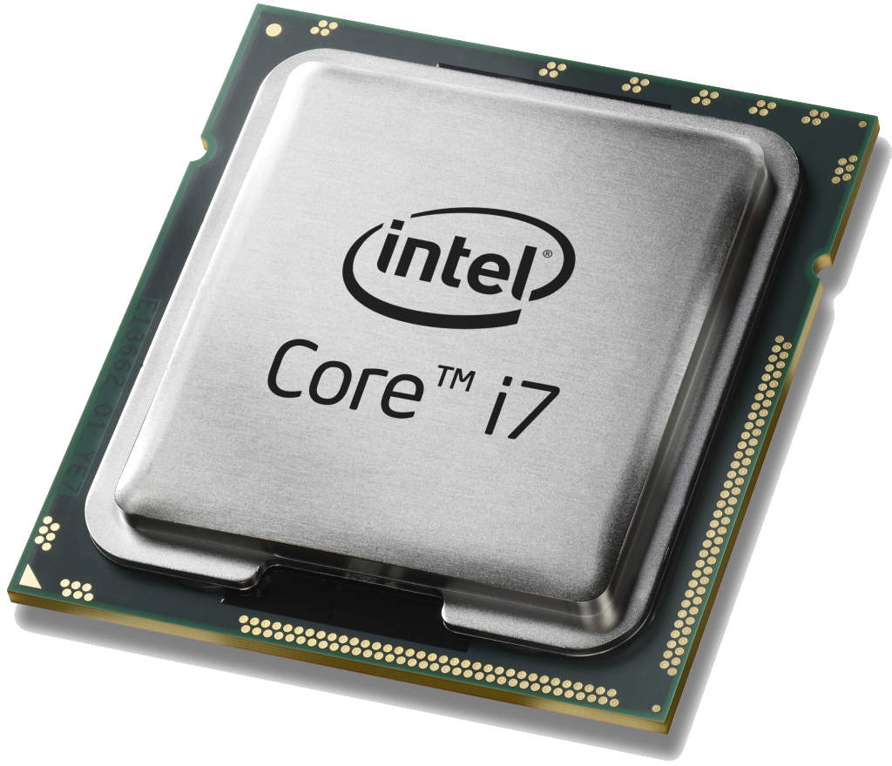

2000. Intel nastavlja s razvojem Pentiuma i proizvodi Pentium 4 (Brey 2000). Pentium 4 dobiva novu arhitekturu zvanu NetBurst, sedmu generaciju Intelovih mikro arhitektura. Za razliku od P6 mikro arhitektura, NetBurst je puno brži, a početna brzina procesorskog sata (engl. CPU Clock Rate) je varirao od 1.3 GHz do 2.0 GHz, iako je to još uvijek, jednojezgreni procesor (Brey 2000).
Dvije godine prije Pentium 4, Intel je izumio 64 bitni procesor, pod imenom Xeon (Hall 2010). Xeon je imao veliki broj prednosti nad 32 bitnim mikro arhitekturama, međutim, imao je I kobne slabosti (Brey 2000). Imao je veće količine RAM-a, veću cache memoriju i podržavao je sustave s više utora (engl. multi socket systems). Nažalost, imao je puno kobnije slabosti kao što su niži CPU Clock Rates, nije imao integrirani grafičku procesorsku jedinicu (engl. Graphics Processing Unit, GPU) I nije imao podršku za podizanje clock rate-a tj. overclocking. Unatoč svojim slabostima Xeon je bio popularan među desktop korisnicima, primarno ljubiteljima video igri. Xeon kasnije doštiže I clock rate od 4.00 GHz. (Brey 2000) Također, Xeon uvodi i hyperthreading tehnologiju kojom se ubrzava paralelno izvođenje procesa, tj. izvođenje više procesa odjedanput.